Contents
Nettoyage du Workspace
clear all;
close all;
clc;
Exercice 1
clear all;
close all;
clc;
t = linspace(-4,4,1000);
s = sin(pi*t);
for i = 1:1000
s(i) = s(i)/(pi*t(i));
end
figure;
plot(t,s);
xlabel('temps (s)');
title('Signal sur le Temps');
t = linspace(-2,2,500);
s1 = sin(t);
s2 = sin(3*t)/3;
s3 = sin(5*t)/5;
figure;
plot(t, s1, '--');
hold on;
plot(t, s2, '--');
plot(t, s3, '--');
s4 = s1+s2+s3;
plot(t, s4, 'LineWidth', 2);
hold off;
s50 = sumSine(50, t);
figure;
s500 = sumSine(500, t);
hold on;
plot(t, s500);
hold off;
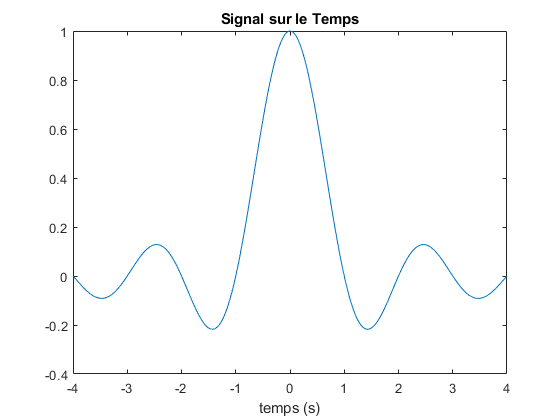 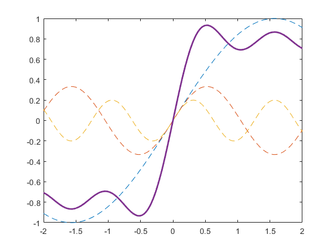 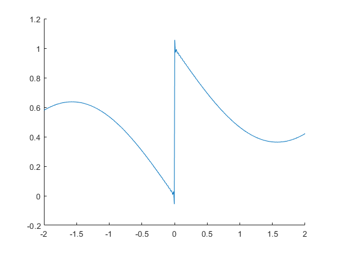
Exercice 2
clear all;
close all;
clc;
figure;
ex2num2(20,1);
ex2num2(75,2);
ex2num2(100,3);
ex2num2(160,4);
ex2num2(180,5);
ex2num2(330,6);
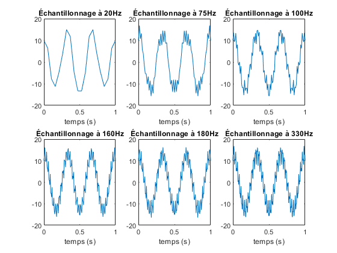
Exercice 3
clear all;
close all;
clc;
t = linspace(0,1,250);
Y1 = 7*sin(2*pi*10*t);
Y2 = 4*sin(2*pi*25*t+(pi/3));
Y3 = 3*cos(2*pi*50*t);
figure;
plot(t, Y1);
hold on;
plot(t, Y2);
plot(t, Y3);
hold off;
xlabel('t');
ylabel('Y');
title("Exercice 3.1");
legend("Y1", "Y2", "Y3");
Z = Y1 + Y2 + Y3;
figure;
plot(t, Z, 'LineWidth', 2);
xlabel('t');
ylabel('Y');
title("Exercice 3.3");
figure;
subplot(3,1,1);
plot(t, fft(Y1));
subplot(3,1,2);
plot(t, fft(Y2));
subplot(3,1,3);
plot(t, fft(Y3));
figure;
plot(t, fft(Z));
Warning: Imaginary parts of complex X and/or Y arguments ignored
Warning: Imaginary parts of complex X and/or Y arguments ignored
Warning: Imaginary parts of complex X and/or Y arguments ignored
Warning: Imaginary parts of complex X and/or Y arguments ignored
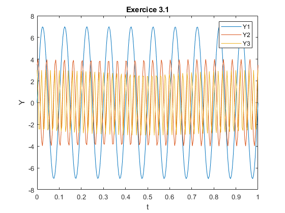 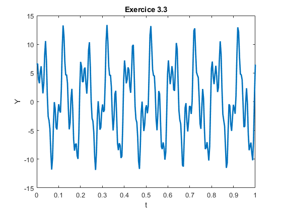 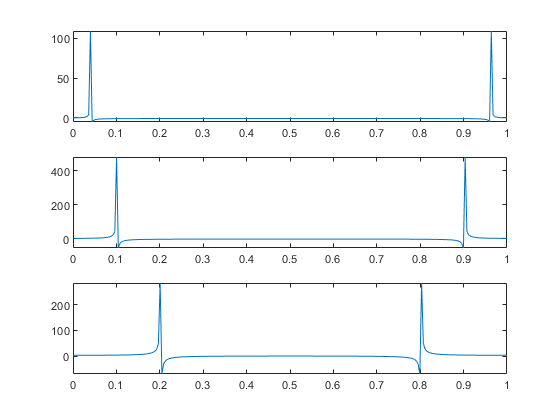 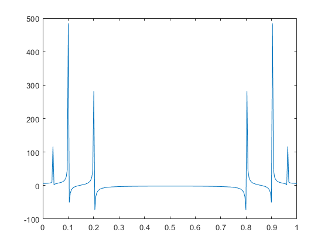
Exercice 4
clear all;
close all;
clc;
[Data,Fe] = audioread('X:\Documents\INF8725\tp1\audio.wav');
player = audioplayer(Data, Fe);
player.play();
figure;
ex4num3(Data, Fe);
Fn = Fe/2;
cutoff = 1000/Fn;
filtre = fir1(128, cutoff, 'low');
filteredData = filter(filtre, 1, Data);
hold on;
ex4num3(filteredData, Fe);
hold off;
w1 = chebwin(129, 30);
f1 = fir1(128, 250/Fn, 'high',w1);
w2 = hamming(129);
f2 = fir1(128, 250/Fn, 'high', w2);
w3 = blackman(129);
f3 = fir1(128, 250/Fn, 'high', w3);
HD1 = dfilt.dffir(f1);
HD2 = dfilt.dffir(f2);
HD3 = dfilt.dffir(f3);
freqz([HD1,HD2,HD3]);
filteredData2 = filter(f1,1,filteredData);
filteredData3 = filter(f2,1,filteredData);
filteredData4 = filter(f3,1,filteredData);
player = audioplayer(filteredData2, Fe);
player.play();
player = audioplayer(filteredData3, Fe);
player.play();
player = audioplayer(filteredData4, Fe);
player.play();
figure;
ex4num3(filteredData2, Fe);
hold on;
ex4num3(filteredData3, Fe);
ex4num3(filteredData4, Fe);
hold off;
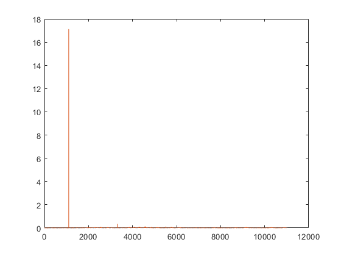 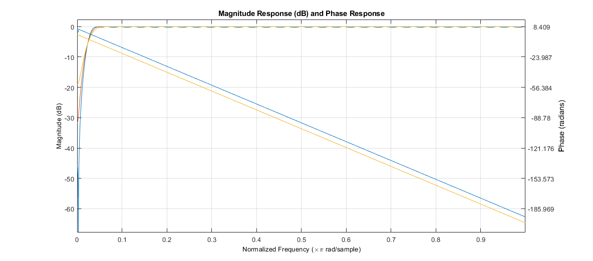 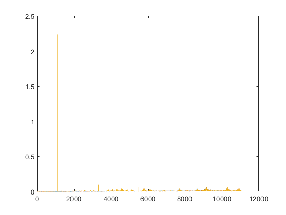
Fonctions
function[] = ex2num2(F, i)
t = linspace(0,1,F);
Y = 2*sin(165*pi*t) + 13*cos(6*pi*t) - 3*cos(80*pi*t);
subplot(2,3,i);
plot(t, Y);
xlabel('temps (s)');
title("Échantillonnage à " + F + "Hz");
end
function[r] = sumSine(n, t)
r = 1/2;
for i = 1:n
e = sin(((2*i)+1)*t);
e = e / ((2*i)+1);
r = r + 2*e/pi;
end
end
function[] = ex4num3(x, y)
L = size(x, 1)/y*1000;
Y = fft(x);
P2 = abs(Y/(L));
P1 = P2(1:L/2+1);
P1(2:end-1) = 2*P1(2:end-1);
f = y*(0:(L/2))/L;
plot(f, P1);
end